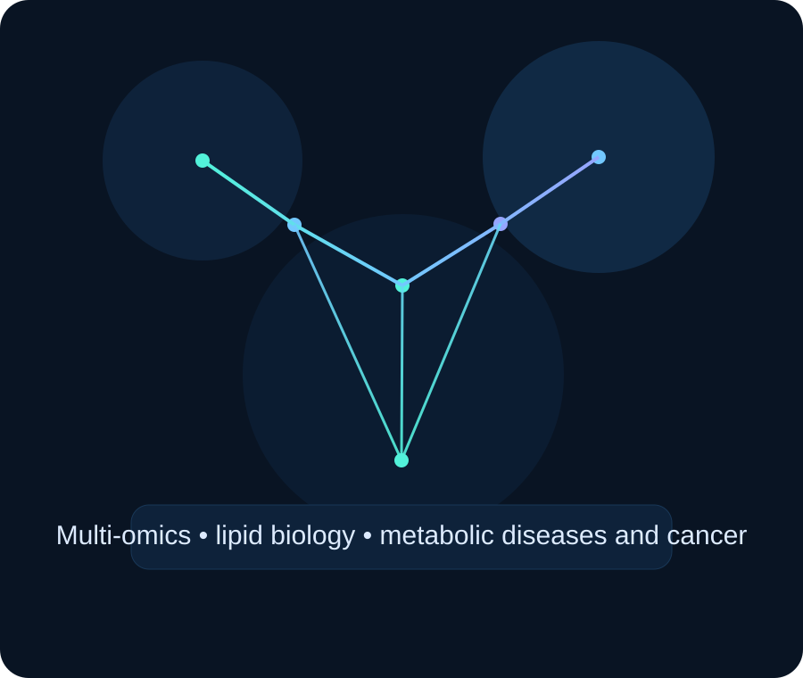
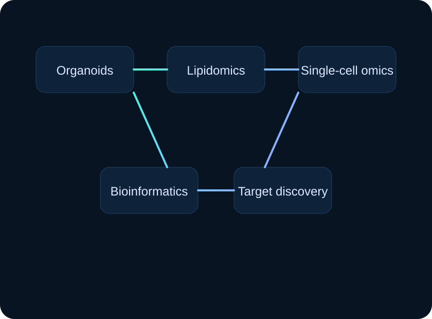

Lipid metabolism in metabolic diseases and cancer
We investigate how renal lipid handling changes in disease and how lipotoxicity, inflammation, and fibrosis reshape kidney function.
Biomedical metabolism • spatiotemporal biology • AI bioinformatics
The Meng Lab combines molecular biology, lipidomics, organoid models, single-cell and spatial multi-omics, and computational analysis to study metabolic diseases, cancer, and therapy resistance.

About
The Meng Lab studies how lipid metabolism is regulated across time, cell state, and tissue context, and how these programs break down in metabolic diseases and cancer. A major focus of the lab is the interface between lipid homeostasis, endoplasmic reticulum stress, transcriptional regulation, and metabolic adaptation.
Our work examines how stress-response pathways and metabolic networks are rewired during disease progression, with particular interest in 12-hour biological rhythms, organelle function, membrane dynamics, and metabolic flexibility. We use biochemistry, functional genomics, lipidomics, metabolomics, organoid systems, and single-cell and spatiotemporal multi-omics to define mechanisms and identify pathways with translational potential.
By combining experimental and computational approaches, the lab aims to uncover how metabolic and immune pathways are reorganized in disease and how these changes may be leveraged for therapeutic discovery.
Bio
China Medical University, Department of Clinical Medicine, China
M.B. in Clinical Medicine (M.D. equivalent in the U.S.), 2002
University of Edinburgh, School of Informatics, U.K.
M.Sc. in Artificial Intelligence and Bioinformatics, 2005
University of Edinburgh, MRC Human Genetics Unit, U.K.
Ph.D. in Clinical and Molecular Medicine (Pathology and Epigenetics), 2013
Research
We investigate how renal lipid handling changes in disease and how lipotoxicity, inflammation, and fibrosis reshape kidney function.
We examine how unfolded protein response pathways influence lipid remodeling, mitochondrial function, and cellular resilience.
We are interested in 12-hour and circadian programs that coordinate metabolism and in how disrupted timing contributes to disease progression.
We use functional genomics, lipidomics, and disease-relevant models to identify pathways that may be therapeutically actionable.
Platforms
The lab integrates wet-lab and data-intensive methods to connect molecular mechanism with systems-level interpretation.

Publications
Meng H, Gonzales NM, Lonard DM, Putluri N, Zhu B, Dacso CC, York B, O’Malley BW. Nature Communications. 2020;11:6215.
Meng H, Gonzales NM, Dacso CC, York B, O’Malley BW. Cell Reports. 2022;38(10):110491.
Singh R, Meng H, Shen T, Lumahan S, et al. Proceedings of the National Academy of Sciences. 2023;120(19):e2218229120.
Collaborative study identifying proteostasis network mechanisms linked to tumor dormancy in pancreatic cancer. Science. 2023.
Contact
Email: huan.meng@gmail.com
Website: mengslab.github.io